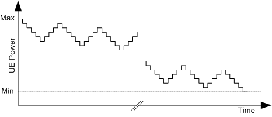
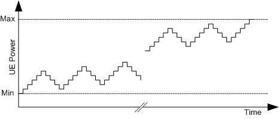

Phase discontinuity is the change in phase between two adjacent timeslots. According to 3GPP TS 34.121, the phase discontinuity for circuit switched connections has to be measured as follows.
A linear best-fit to the phase error curve in each timeslot is extrapolated onto the slot boundaries. An estimate of the phase error is yield at the beginning and at the end of each slot. The 25 μs transient periods on either side of the nominal timeslot boundaries is excluded.
- The extrapolated phase at the end of the timeslot preceding the slot boundary and
- The extrapolated phase at the start of the timeslot following the slot boundary.
For 3GPP conformance tests, the phase discontinuity measurement has to be performed for the entire UE output power range. The output power is changed from maximum to minimum power, sending repeatedly five down and four up TPC commands. The following figure shows the resulting UE output power.

When the minimum power is reached, the output power has to be changed back to maximum power, sending repeatedly five up and four down TPC commands. The sequence of TPC commands is shown in the following figure.
